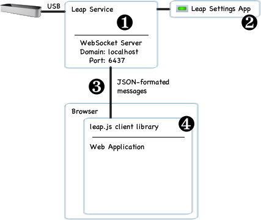

Leap Motion Architecture
The Leap Motion Controller supports most popular desktop operating
systems. The Leap Motion software runs as a daemon. The software connects
to the Leap Motion Controller device over the USB bus. Leap-enabled
applications access the Leap Motion service to receive motion tracking data.
The Leap Motion SDK provides two varieties of API for getting the Leap Motion
data. These APIs enable you to create Leap-enabled applications in several
programming languages including JavaScript running in a browser
environment.
Note: The Leap Motion daemon communicates with applications
using the TCP port: 127.0.0.1:5905. This address and port must not be
blocked by a firewall or other program.
Application Programming Interfaces
The Leap Motion SDK provides two varieties of API to get tracking data
from the Leap Motion service: a native interface and a WebSocket
interface. The native interface is a dynamic library that you can use to
create new, Leap-enabled applications. The WebSocket interface and
JavaScript client library allow you to create Leap-enabled web
applications.
Leap Motion Application Interface
The application interface is provided through a dynamically loaded
library. This library connects to the Leap Motion service and provides
tracking data to your application. You can link to the library directly
in C++, Objective-C++, and Objective-C applications.

The Leap Motion daemon receives data from the Leap Motion
Controller over the USB bus. It processes that information and sends
it to running Leap-enabled applications. By default, the daemon
only sends tracking data to the foreground application. However,
applications can request that they receive data in the background (a
request that can be denied by the user).The Leap Motion application runs separately from the daemon and
allows the computer user to configure their Leap Motion
installation. The Leap Motion application is a Control Panel applet on
Windows and a Menu Bar application on Mac OS X.The foreground Leap-enabled application receives motion tracking
data from the daemon. A Leap-enabled application can connect to the
Leap Motion daemon using the Leap Motion native library. Your
application links against the Leap Motion native library
directly.When a Leap-enabled application loses the operating system focus,
the Leap Motion daemon stops sending data to it. Applications
intended to work in the background can request permission to receive
data even when in the background. When in the background, the
configuration settings are determined by the foreground application.
Leap Motion WebSocket Interface
The Leap Motion daemon runs a WebSocket server on the localhost domain
at port 6437. The WebSocket interface provides tracking data in the form
of JSON messages. A JavaScript client library is available that consumes
the JSON messages and presents the tracking data as regular JavaScript
objects.

The Leap Motion daemon provides a WebSocket server listening on
http://127.0.0.1:6437.The Leap Motion control panel allows end users to enable or disble
the WebSocket server.The server sends tracking data in the form of JSON messages. An
application can send configuration messages back to the server.The leap.js client JavaScript library should be used in web
applications. The library establishes the connection to the server
and consumes the JSON messages. The API presented by the JavaScript
library is similar in philosophy and structure to the native API.
This interface is intended primarily for web applications, but any
application that can establish a WebSocket connection can use it. The
server conforms to RFC6455.
Objective-C Language Support
The Leap Motion library is written in C++. Objective-C applications are
supported by hand-written code that wraps the C++ library with Objective-C
definitions. To build a Leap-enabled Objective-C application, include the
wrapper header and Objective-C++ code file in your application along with the
Leap Motion C++ headers. You can then use the classes defined in the wrapper
in (otherwise) pure Objective-C applications. Link your application with
libLeap.dylib and include the library in your application package.
Two versions of libLeap.dylib are provided in the SDK. One version is
linked using libstdc++.dylib; the other is linked with libc++.dylib. Use the
version appropriate for your project settings (recent versions of Xcode
create projects that use the libc++.dylib version).
All the library, code, and header files required to develop Leap-enabled
applications and plug-ins are included in the Leap Motion SDK. You can download
the Leap Motion SDK from the Leap Motion Developer Portal.
Mac Operating System Support
The Leap Motion software currently supports OS X 10.6+